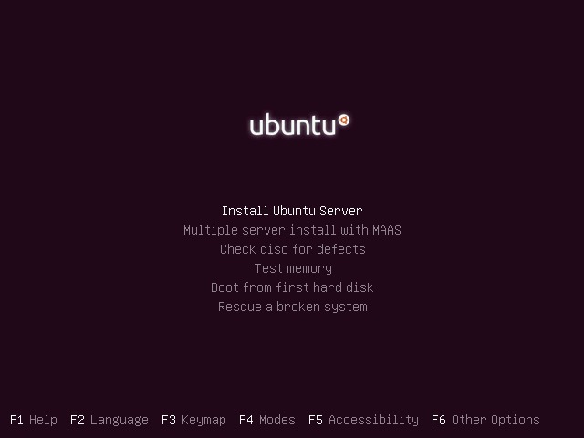
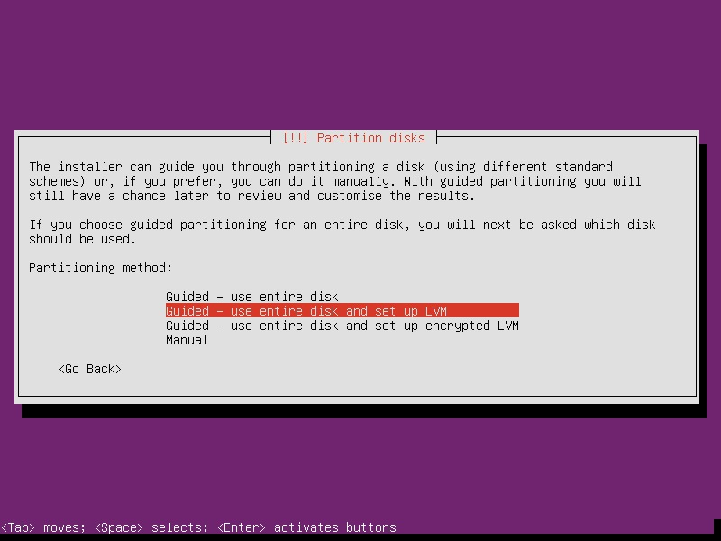
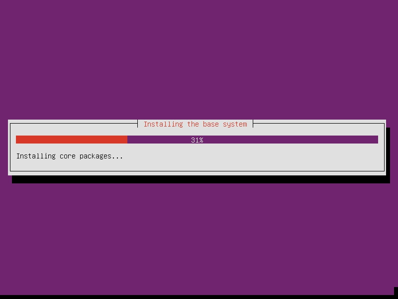
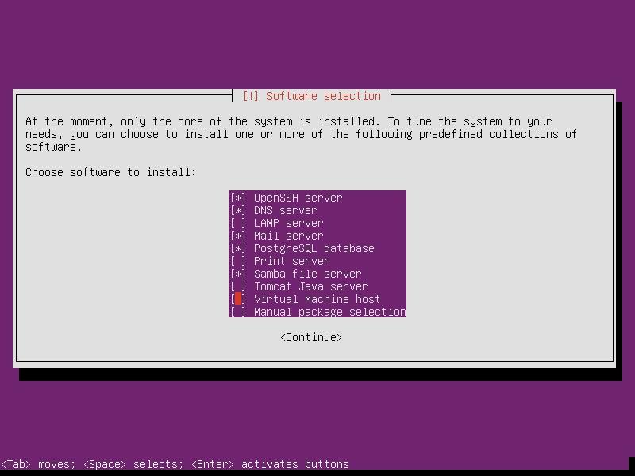
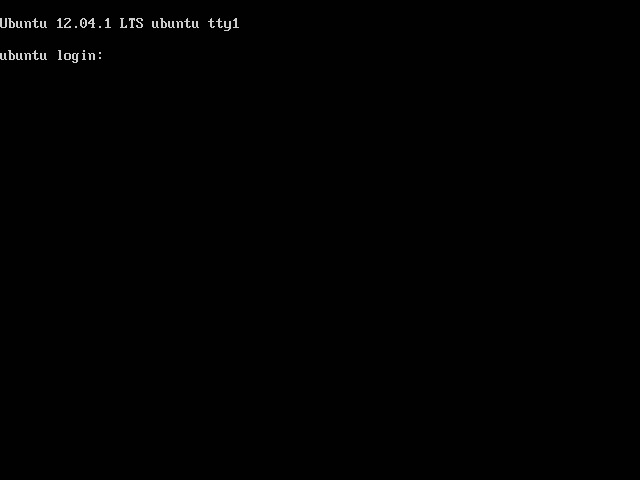

Downloading Ubuntu Server is a snap: you merely have to choose the version that is right for you. There are usually two different versions available at any given moment: the most up-to-date version (currently 12.10) or the current Long-Term Support (LTS) version, which is presently 12.04.1. It is usually a good idea to stick with the LTS version, as long as it is recent. This guarantees that you will be able to get support through Canonical (Ubuntu) for the forseeable future, should you have a problem with the specific version you are using. Though this means you will not get the latest and greatest updates from Ubuntu, on server distributions this is usually not a problem.
Head to Ubuntu Server's download page and select the version that works best for you. Make sure to choose the correct architecture (32-bit or 64-bit) based on your server. Once you have the iso in-hand, burn it to disk with your preferred CD burning application.
It is also possible to install Ubuntu via USB drive.
Installing Ubuntu Server is just as easy as installing Ubuntu's desktop version, but there are (of course) different options you will need to configure. Also, the installer is only available in a text-based menu format. You will be able to use the SPACE key to mark selected option buttons or checkboxes, and TAB to move between fields, just like in any other graphical application.
Load your install CD into your server, and boot it up, after having made sure that your CD/DVD drive is higher in the boot order list. Choose your language and the obvious options from the screen that comes up. It will ask you more questions based on your language, locale and other preferences.
 After this it will attempt to detect your hardware settings and will ask you if you wish to use DHCP. If your server is connected to a network that has a router, choose to use DHCP for now. If not, choose "Configure the network manually" and you will have the option to set your desired static IP, subnet and gateway settings. After the install, we will walk through specific network settings to enable based on your configuration.
Set the hostname and timezone information as per your preferences. Next the installer will take you to the disk configuration menu.
 You will most likely want to choose "Guided - use entire disk". If this system will be running virtual machines or will share disk space with other operating systems, choose "Manual" and create a partition for "/" that reflects the size you want your server storage to have.
After this, your base system will be installed:
 Next, you will set up a base user and choose its password, as well as setting the administrative password for the root user; then you will be asked if you want to encrypt the Home directory on the server. Unless you have extremely sensitive security concerns, I would not bother with encrypting the home directory on a server. We will be encrypting our backed-up data before we place it on the server anyway. Then you will be asked to choose how you want to receive your updates: either manually or automatically. Choose based on your preference. It is often convenient to have your server automatically receive security updates, so you don't need to worry about it.
Finally, you will be asked which software packages should be installed by default:
 1. OpenSSH Server: It is highly recommended that you choose this. This will allow you to remotely access your computer from other machines, either on the local network or on the Internet. We will explain this in the next chapter, 3.5. 2. DNS Server: This is only necessary if you are going to use your server as a network controller and router. We go over this in chapter 3.6. 3. LAMP Server: This will install Apache (web server), MySQL (content publishing platforms like Wordpress or Drupal), and PHP (necessary for almost any website application). We will review these in chapter 3.8. 4. Mail Server: Installs Postfix and Dovecot for mail storage and transmission. We go over these in chapter 3.7. 5. PostgreSQL Database: This is another type of SQL server. You should only choose to install it if the program you want to run explicitly requires it. 6. Print Server: Use this if you will be connecting a printer to this computer and would like to share it on your network for other devices to use. 7. Samba File Server: Use this if you have Windows/Apple devices on your network that you will want to share files or media with. We will go over this in chapter 3.11. 8. Tomcat Java Server: This is for Java software hosting and development, you will not need it unless you are a Java developer. 9. Virtual Machine Host: Use this if you will be running virtual machines (VMs) with this server for various reasons. VMs will be explained in the appendix chapter 3.12.
And with that, your computer will reboot, and you will be prevented with your shiny-new login prompt:
 This base system works according to the Linux command-line rules that were explained in section 2. It has no graphical user interface. The goal of this guide is to get you up-to-speed and comfortable with editing the features of your system without needing to rely on graphical interfaces.
At this point we will set up our server so that it has basic connectivity to the Internet. From there, we will be able to set up applications based on our individual preferences in the following chapters. Below we will explain how to set up your server to communicate with the Internet on one port, and with an internal network on the other. We will assume that "eth0" corresponds to the port connected to our internal network hub or access point, and "eth1" corresponds to the port directly connected to our DSL/satellite/cable modem.
If you have your server behind a router or other firewall which is handling your connection (and you will not be using the server itself as a router or firewall), you will need to assign the server a Static IP address on your router. This is necessary for various reasons. You will need to forward ports to your server for every service you will want to run from it, if you want to be able to reach them from the outside. Because of this, you will need to have the server on an internal static IP address that does not move, lest your running services be interrupted. In the steps below, you will also want to skip any settings for "eth1" as they do not apply.
First, you need to figure out the names of your network interfaces. Most of the time this will be "eth0" and/or "eth1," but to be sure, run ip addr. It will list the different interfaces you have. If you have two network interfaces, make sure you know which port corresponds to which by connecting them to different devices and monitoring how the ip addr entries change.
It is strongly recommended that you avoid running a server on a wireless interface (wlan0). For performance, stability and compatibility reasons, this is simply just a bad idea. This guide will not provide information on configuring servers connected wirelessly.
To set your server with a static IP address, open the file /etc/network/interfaces and add/change the following lines:
auto eth0
iface eth0 inet static
address 10.0.0.5
netmask 255.255.255.0
gateway 10.0.0.1
The "Gateway" should match the internal IP address of your internet-facing device (in most cases, your router). If this server is acting as a router/firewall and is directly connected to the internet with another ethernet port, set the gateway to be the same as the "address." The netmask will likely be "255.255.255.0", or a /24 subnet. Make sure the IP address you choose is on the same subnet as your existing network. That is, if your other devices all operate with IP addresses like 192.168.0.x, your server will need to be a static address in this range, HOWEVER it must be established outside of your router's DHCP address pool. Use your router's manual or online support to determine how to reserve a static IP address for a device.
Now we will add a section to the same file for our other ethernet interface, eth1. This port will be directly connected to our DSL/cable modem and will handle all internal/external requests for the Internet:
auto eth1
iface eth1 inet static
address 10.0.1.1
netmask 255.255.255.248
The "address" field will match the external static IP address provided by your internet service provider. The "netmask" must reflect the netmask of the static IP range you were given. If this is just one IP address, the netmask will be 255.255.255.252; if you received a Subnet from your ISP (like /24), you can convert that number to a netmask with this calculator.
After setting these items, you will need to toggle the interface before the new settings take effect. Run sudo ifdown eth0 then sudo ifup eth0 to cycle the changes.
If your internet-facing ethernet port is connecting to a DSL modem, check to see if you connect to your DSL server via PPPoE. If this is the case, you will need to set up this ethernet port to connect to your modem via PPPoE. Follow the modem's manual or online support page to set it in "bridge" mode, then follow the Ubuntu PPPoE guide to set up the connection on your internet-facing ethernet port.